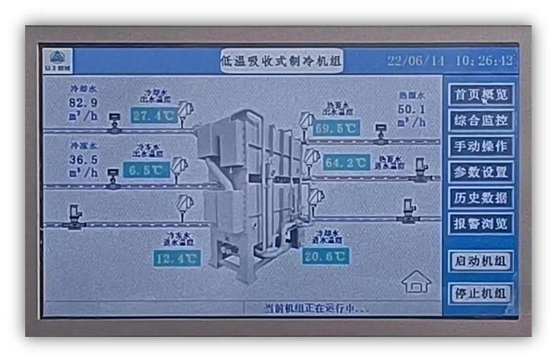

空压机的能耗，往往不止在"打气"这件事上
在电子、半导体、食品、材料等制造场景，压缩空气是常见动力来源。空压机系统的用电不仅来自压缩本身，还包括加载与卸载切换、管网压力损失、冷却系统耗电，以及长时间空载运行带来的无效能耗。
许多企业在评估节能空间时，先看设备功率，却忽略了运行策略。事实上，同样的机组在压力设定偏高、管网泄漏较多或负载波动大的情况下，实际能耗差异可能相当明显。

改造通常从四个方面入手
一是运行策略。按实际用气需求调整压力设定，减少不必要的空载时间。二是系统匹配，包括机组容量与负荷曲线是否吻合、管网布局是否存在明显压降。三是余热回收，空压机运行产生的低品位废热可经过吸收式热泵转化为可用的冷或热，用于工艺预热或生活热水。四是计量与监控，通过分项计量掌握单台设备与整个系统的能耗变化。
在为用户提供节能服务时，广东建卓科技有限公司通常先做现场调研与运行测试，再按工况形成针对性方案，避免直接套用其他企业的改造清单。
余热回收：把废热变成可用能源
空压机排出的低温余热，过去多以散热形式排走。超低温吸收式热泵能够以较低温度的驱动热源制取工艺所需冷量或热量，驱动热源温度要求可下降20—60°C，电能消耗约占输出功率的6‰，冷热转换效率提高25%以上。有关技术原理可查看吸收式热泵页面。

效果怎么验证
改造前后按同一工况记录压力、功率与运行时间，核算单位产气量电耗与系统节能率，并在调试运维阶段持续跟踪。涉及能源管理系统对接的，可通过数据库、OPC或TCP接口接入采集数据，形成可复核的记录。
如需按自身工况评估空压机系统节能空间，可提供服务电话0769-22996692，或通过微信扫码交流用气现状与运行参数。